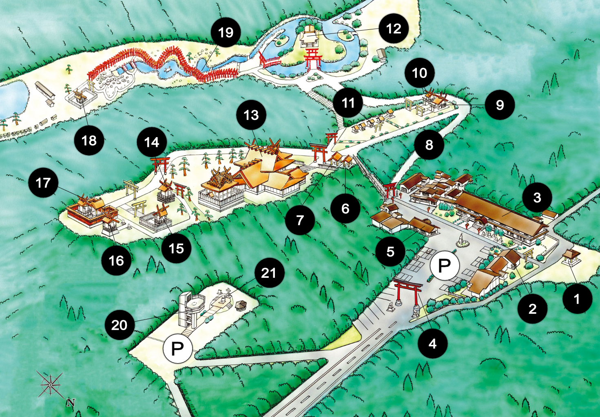
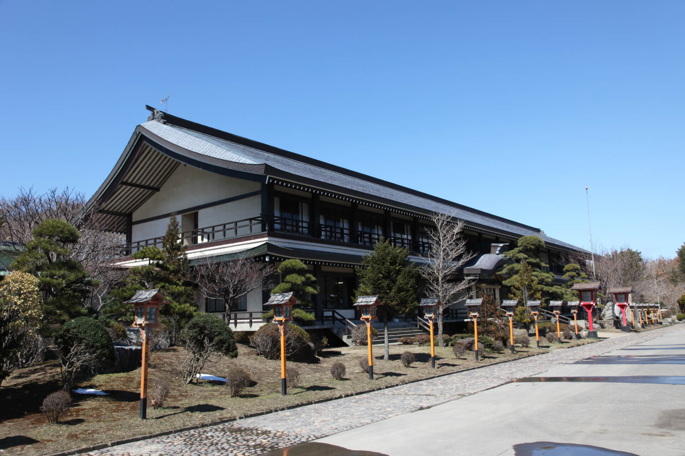
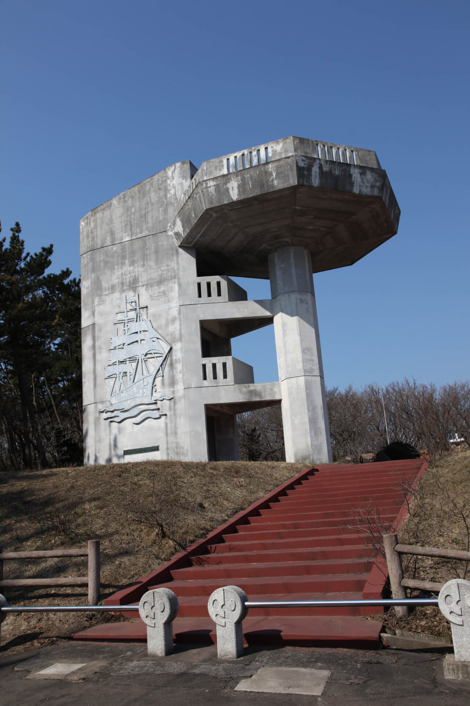
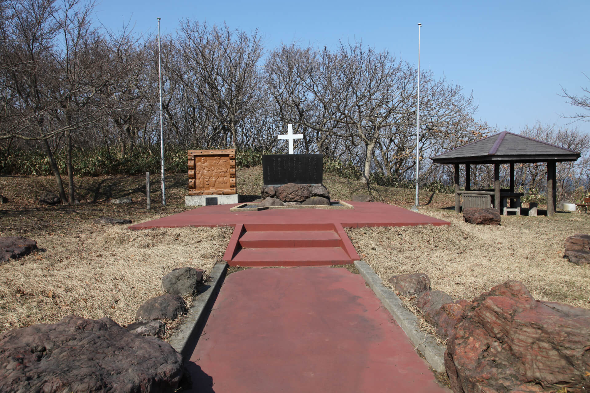

- 1
- 相撲場
- 2
- 禊場


- 6
- 命婦舎
- 7
- 手水舎
- 8
- 女坂
- 9
- 三五郎稲荷神社
- 10
- 大島稲荷神社
- 11
- 千代稲荷神社
- 14
- 作丈一稲荷神社
- 15
- よんこ稲荷神社
- 16
- 熊五郎稲荷神社

- 18
- 神明宮


明治22年（1889）10月30日、米国商戦チェスボロー号（1,500トン）が日本海七里長浜の沖合で座礁遭難した。
この日、日本海は大荒れで、風速６０メートルを越す大嵐の中浅瀬に激突、船は大破し、乗組員２３名全員が海に放り出されました。荒海に船を出し、このうち４名を救助し、介護したのが車力村の人達です。
殊に神社にお参りに来る人々のため、木賃宿を開いていた工藤吉右衛門（後に、神社の初代常勤奉仕者）の妻、班の活動は目覚しいものでした。
はんは、衰弱死仮死状態と見られた乗組員のヘンリー・ウィルソン（英国人）を、村人達の見守る中、着物を脱いで体温で暖め、一命を救いました。吉右衛門夫婦は、救助した４人に鶏肉や卵を提供し、元気を回復させました。
後に、その人命救助の功により、工藤はんに青森県知事から感謝状が贈られました。
神社入り口の大鳥居手前の丘の上に、高山小公園（チェスボロー号記念公園）があり、この遭難事故で亡くなった１９名の御霊を慰めると共に、村人の献身的な救助活動の勇姿を讃える慰霊碑と記念碑があります。
この日、日本海は大荒れで、風速６０メートルを越す大嵐の中浅瀬に激突、船は大破し、乗組員２３名全員が海に放り出されました。荒海に船を出し、このうち４名を救助し、介護したのが車力村の人達です。
殊に神社にお参りに来る人々のため、木賃宿を開いていた工藤吉右衛門（後に、神社の初代常勤奉仕者）の妻、班の活動は目覚しいものでした。
はんは、衰弱死仮死状態と見られた乗組員のヘンリー・ウィルソン（英国人）を、村人達の見守る中、着物を脱いで体温で暖め、一命を救いました。吉右衛門夫婦は、救助した４人に鶏肉や卵を提供し、元気を回復させました。
後に、その人命救助の功により、工藤はんに青森県知事から感謝状が贈られました。
神社入り口の大鳥居手前の丘の上に、高山小公園（チェスボロー号記念公園）があり、この遭難事故で亡くなった１９名の御霊を慰めると共に、村人の献身的な救助活動の勇姿を讃える慰霊碑と記念碑があります。